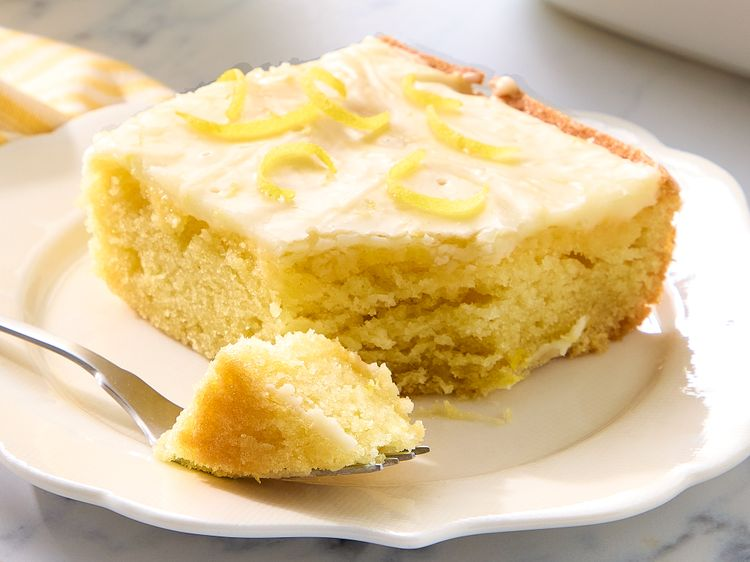

This lemon Texas sheet cake is a bright, citrusy twist on the classic white Texas sheet cake. A light lemon cake layer is topped with a tart glaze, making it the perfect easy dessert for picnics and potlucks.